Stereoselectivity refers to the preferential formation in a chemical reaction of one product stereoisomer (enantiomer or diastereomer) over another, as a result of inherent reaction specificity, or the influence of chiral features in the substrate, reagent, catalyst or environment. The more specific terms enantioselectivity and diastereoselectivity are commonly used in appropriate situations. When this selectivity results in the formation of an excess of one enantiomer over the other from an achiral or racemic substrate it is sometimes called asymmetric induction. Any reaction which creates a new stereogenic center may proceed in a stereoselective fashion. The reduction of 3-hexyne to trans-3-hexene by sodium in ammonia, or to cis-3-hexene by Lindlar catalytic hydrogenation are examples. Since the substrate, reagents and products are all achiral, this diastereospecificity lies in the nature of the reactions themselves.
Hydroboration Hydroboration of the prochiral alkene 1-phenylcyclopentene, followed by peroxide oxidation, yields trans-2-phenylcyclopentanol as a racemic mixture.
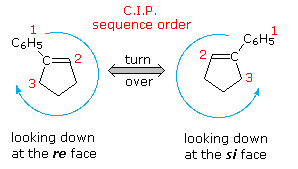
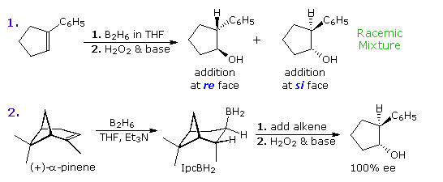
Epoxidation Epoxidation of double bonds has proven to be an effective way of introducing oxygen functionality at both carbon atoms. One or two new stereogenic centers are normally created, often with excellent diastereoselectivity. This transformation is commonly carried out by the action of a peracid (RCO3H), such as peracetic acid or perbenzoic acid, in chloroform or methylene chloride solution. The configuration of double bond substituents (E or Z) is generally preserved, as shown in equation 1 below. Electron donating substituents on the double bond facilitate this reaction, and in the case of deactivation by conjugated electron withdrawing groups, reaction with alkylhydroperoxide anions often achieves epoxidation by a conjugate addition-elimination pathway (equation 2). Steric hindrance usually diverts epoxidation to the less hindered face of a double bond; however hydrogen bonding to a neighboring hydroxyl group may provide a more powerful orienting influence, as in equation 3. In this case note also the selective epoxidation of the more substituted double bond.
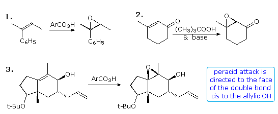
Alternative reaction paths for epoxidation may result in a different diastereoselectivity, as demonstrated above by clicking on the diagram. The trans-fused cycloalkene outlined by the light green box in equation 4 may be epoxidized by a peracid or by base treatment of a bromohydrin intermediate. The upper or β-face of the double bond is blocked by the angular methyl group, so peracid epoxidation occurs at the other face (designated α). Addition of HOBr to the double bond is initiated by electrophilic bromine attack at the less-hindered α-face, and since diaxial addition is favored stereoelectronically, the hydroxyl is bound to the β-face. An Intramolecular SN2 reaction then forms the diastereomeric epoxide. A similar strategy permits diastereoselectivity to be achieved for acyclic alkenes, such as that shown in equation 5. Here a nearby nucleophilic carboxyl group is positioned to reversibly open an iodonium intermediate, producing an iodolactone (central structure). Since this is a reversible reaction, the more stable trans-disubstituted lactone is the major product. Base catalyzed opening of the lactone forms an alkoxide species that immediately displaces iodide to give the epoxide product. Note that all the compounds in this equation are chiral and racemic. It is known that epoxidation of isolated alkenes by tert-butyl hydroperoxide may be catalyzed by transition metal catalysts, and that an allylic hydroxyl facilitates and facially directs the reaction. By clicking on the above diagram a second time, examples of this reaction will be displayed, with equation 8 illustrating the neighboring group influence. Several features should be noted. First, the Z-configuration of the double bond is preserved in the epoxide products. Second, the allylic hydroxyl group exerts a modest facial diastereoselectivity on the reaction. For clarity the chiral carbinol group is drawn in its R-configuration, but the racemic alcohol would yield the same mixture of diastereomers as racemates. Professor K. B. Sharpless, Scripps Research Institute, has transformed this general epoxidation reaction into a powerful enantioselective procedure, by the addition of a chiral tartrate ester ligand to a titanium alkoxide catalyst. This important synthetic method is outlined in the following diagram.
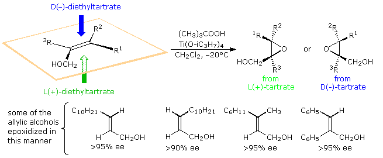
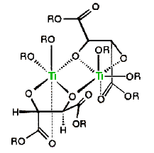 When mixed with one equivalent of diethyl tartrate, titanium tetraisopropoxide forms a dimeric complex with the loss of two isopropyl alcohol molecules. A proposed structure for this complex is shown on the right, with the titanium atoms colored green. Addition of tert-butylhydroperoxide and an allylic alcohol results in the displacement of two more isopropyl alcohols and the formation of a new reactive catalyst complex. A structure for this complex will also be displayed on the right by clicking on the original structure. In this new drawing the double bond of the allylic alcohol is colored blue, and the peroxide oxygens, one of which becomes the epoxide oxygen, are colored red. A pink arrow indicates the bonding of this oxygen to a prochiral face of the double bond. For primary allylic alcohols of the type shown above, Sharpless epoxidation achieves the remarkable conversion of an achiral substrate into a chiral product with high enantioselectivity. In the reaction of secondary allylic alcohols, where substituent R2 or R3 is an alkyl group (diagram on the right), the allylic alcohol substrate is chiral and the enantiomers react at different rates via diastereomeric transition states. For the racemic alcohol in which R2 (or R3) is a cyclohexyl group, the S-enantiomer reacts over 100 times faster than the R-enantiomer, presumably due to steric hindrance of R2. This rate difference results in a kinetic resolution of this substrate. The S-enantiomer is converted to its erythro diastereomeric epoxide in 98:2 diastereospecificity, while the R-enantiomer is recovered unchanged in over 96% ee. A model of the Sharpless catalyst may be examined by . Other catalyst systems for enantioselective epoxidation, as well as hydroxylation and hydrogenation of carbon-carbon double bonds, have been developed and are used in the manufacture of chiral intermediates. The 2001 Nobel Prize in chemistry was awarded to William S. Knowles, Ryoji Noyori, and K. Barry Sharpless for their seminal work in this important field.

Stereoelectronic factors influence the addition of nucleophilic reagents to carbonyl groups, particularly aldehydes and ketones. In the following diagram the essential molecular orbitals are drawn to the left of the arrow. Initial bonding with a nucleophile is believed to involve the empty antibonding π*-orbital. This explains the favored bonding alignment, known as the Bürgi-Dunitz trajectory.
Nucleophilic addition reactions to aldehydes and ketones are probably the earliest and most actively studied examples of stereoselectivity. Selective reduction of 4-tert-butylcyclohexanone (I) to a 10:1 mixture of trans- and cis-4-tert-butylcyclohexanol by LiAlH4 is an example of diastereoselectivity, reflecting a preference for hydride attack at the more hindered axial face of the carbonyl group. This selectivity can be reversed by using a larger hydride reagent, such as Li(sec-butyl)3BH; in which case severe hindrance to axial approach diverts the reaction to the equatorial face. The cis-alcohol is then found to be the major product by over 10:1. Note that in these reactions both the reactants and products are achiral. A similar influence of steric hindrance is seen in reductions of the bicyclo[2.2.1]heptanones II and III (shown below). In compound II the exo face of the prochiral carbonyl group is less hindered than the endo face. The hindrance is reversed in compound III, and the products from LiAlH4 reduction reflect this difference. The relatively fixed configurations of these cyclic ketones permit local stereoelectronic and steric factors to influence reactivity in a well-defined manner.
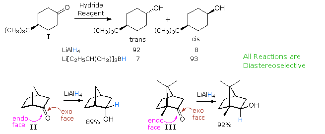
Models for Addition to Acyclic Substrates
As expected, the behavior of conformationally mobile acyclic compounds is more difficult to rationalize. In the following illustration, two hydride reductions of chiral methyl ketones are shown. Since each ketone has an existing stereogenic site, and since the reduction creates a new chiral center, diastereomeric products are possible. These may be designated in several ways, but the syn-anti notation is generally preferred over the more limited erythro-threo designation. When the existing stereogenic center is located next to the carbonyl group, as in the upper equation, it may influence the proportion of product diastereomers to a significant degree. Because the new stereogenic centers are vicinal, this is termed 1,2-diastereoselectivity, and is the same for both an enantiomerically pure or a racemic reactant. If, however, the stereogenic center is far away from the carbonyl group, it has a negligible influence on the reduction, and a nearly 50:50 mixture of diastereomers is produced (lower example).
A number of models have been proposed to explain the diastereoselectivity of the first reduction. Many conformations about the alpha-C-CO bond may be written, and the challenge is to pick one that accounts for the observed selectivity. Three models will be considered here. For general reference, the substituents on the chiral center adjacent to the carbonyl group are labeled L (large), M (medium) and S (small), reflecting their approximate size. The original structure of these models assumed an orthogonal (90º) approach of the nucleophile to the plane of the carbonyl group, and a reactant-like transition state. In the following diagram this has been changed to the preferred Bürgi-Dunitz approach, as shown by a pink arrow. Each model predicts the correct configuration of the favored diastereomer from LiAlH4 reduction of 3-phenyl-2-butanone (upper equation above with L=C6H5, M=CH3 & S=H). This diastereoselectivity is commonly termed Cram or Felkin selectivity.
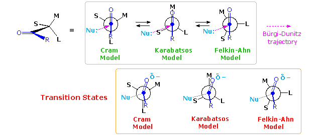
D. J. Cram (Nobel prize 1987) proposed the model on the left in 1952. It suffers from steric hindrance of substituent L with the R substituent on the carbonyl group as well as torsional strain. A more favored conformation was chosen by G. Karabatsos, as shown by the center model. Here the torsional strain is reduced, and the selectivity in reactions of phenylacetaldehydes bearing different α-substituents was rationalized more correctly than by Cram's model. The most recent model (on the right) is that proposed by H. Felkin and elaborated by N.T. Ahn. In this case, overlap of the carbonyl π*-orbital with the C–L σ*-orbital provides electronic stabilization. These models all require classification of S, M & L substituents, occasionally a tricky process, and assume a reactant-like transition state for the reduction. Even so, some bonding of hydride to the carbonyl carbon must take place in the transition state, accompanied by corresponding small structural changes. Plausible structures for these reactant-like transition states are given in the orange box. A brief analysis of these models is instructive. Although the unfavorable eclipsing of R & L iin the Cram model s slightly relieved in the transition state, the oxygen (and associated metal) moves toward the M group, resulting in increased steric crowding there. The Karabatsos model starts with a favorable conformer, but the nucleophile trajectory nearly eclipses the C-S bond (~20º dihedral angle). The oxygen shift in the transition state relieves eclipsing strain with M, benefiting the transition state energy. Finally, the Felkin-Ahn model seems to offer the best rationalization. The nucleophile trajectory is roughly 40º away from eclipsing the C-S bond, and crowding of both the O⇔M and R⇔S groups is reduced in the transition state. By clicking on the above diagram a table giving the diastereoselectivity for seven typical addition reactions will appear. The excess of one diastereomer over another is sometimes given as a ratio (e.g. 4:1), but here we use percent diastereomeric excess (%de), defined as the mole fraction difference in diastereomers times 100. Thus, a mixture of 80% diastereomer A and 20% diastereomer B (4:1) has a 60% de. Beneath this table is an example of borohydride reduction of a steroidal methyl ketone (only two rings are shown). The Felkin-Ahn model shown to the right of the equation correctly predicts the diastereoselectivity of the reduction in favor of isomer A. Remarkably, if this ketone is reduced by the bulky borane reagent, disiamylborane (C5H11)2BH, the diastereoselectivity is reversed, with isomer B being formed in 82% de. Since this reduction proceeds by an initial complexing of the Lewis-acidic boron with the carbonyl oxygen, the favored transition state conformer is that in which the small hydrogen and the medium-sized carbon-16 methylene group exchange locations, influenced by the greatly increased size of the oxygen moiety. This change in stereoselectivity is sometimes termed anti-Cram or anti-Felkin selectivity. Aldehydes are especially prone to changes in stereoselectivity for the same reason; however, large nucleophilic reagents favor the Felkin-Ahn product due to reduced hindrance for the Bürgi-Dunitz trajectory (compare cases 1 & 2 in the table).
Because of the conformational mobility of these compounds, it is important to recognize an important precept known as The Curtin-Hammett Principle. The ratio of products obtained from a a group of equilibrating conformers is determined by transition state energies, not conformer concentrations.
The Chelation Effect
Shortly after proposing his initial model, Cram recognized that ketones and aldehydes having an α-oxygen, nitrogen or sulfur functional group often exhibited a different stereoselectivity. He attributed this behavior to a cyclic chelated conformer, in which the hetero atom of the α-function is coordinated with the metal moiety of the nucleophilic reagent (e.g. Li. Al, B & Mg). The following diagram shows a typical reaction of this kind, in which the chelating ligand is Y and the proposed transition state is enclosed in square brackets. The nucleophile is shown attacking the carbonyl group preferentially from the side of the smallest remaining substituent. Nine examples are listed in the table beneath the equation and two more are shown in the blue tinted box to its right. Powerful coordinating metals such as Zn(II) and Ti(IV) provide the strongest chelation control, as does reaction at a low temperature.
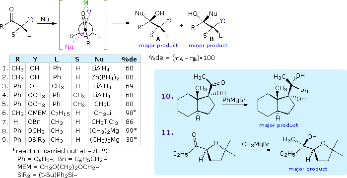
The silyl ether derivative in example 9 is a case of steric hindrance to chelation. The smaller trimethylsilyl ether derivative reacts rapidly and with very high diastereoselectivity, whereas the larger triisopropylsilyl analog reacts slowly and with poor diastereoselectivity favoring isomer B.
Non-chelating Polar Effects
The influence of non-chelating polar substituents on the diastereoselectivity of carbonyl addition reactions proved anomalous. In a study of LiAlH4 reduction of 2-chloropropiophenone J. Cornforth noted that the syn-isomer B was formed in 3:1 ratio with its anti-isomer A, as shown by the top equation in the following diagram. Indications of substituent size from conformational equilibria of substituted cyclohexanes, suggest that a methyl group is significantly larger than a chlorine; consequently, the Felkin model predicts that the anti-isomer should predominate (yellow shaded box). The chelation model leads to a similar prediction. Since chlorine is known to be a poor chelating ligand, Cornforth suggested that dipole repulsion with the carbonyl group (orange arrows) would result in an eclipsed conformation, such as that shown beneath the equation. Such an intermediate predicts the correct diastereoselectivity, but it suffers from the same torsional strain as the Cram model. The Felkin-Ahn model may be modified to reflect the influence of a polar substituent, as shown by the formula right of center. This model also predicts the correct diastereoselectivity, and suggests that additional transition state stabilization may occur by overlap of the approaching nucleophile with the antibonding σ* orbital of the C–Cl bond. A further test of this rationalization is provided by removing the chelating metal species. Reduction of similar α-substituted propiophenones, C6H5COCHYCH3 (Y = dimethylamino or acetoxy), by the hypervalent hydride reagent, C6H5(CH3)2SiFH(–) (C4H9)4N(+), proceeds with high diastereoselectivity, favoring the syn isomer analogous to B. The absence of a chelating metal combined with the bulk of the hydride donor results in a >95 %de, despite the replacement of chlorine by the much stronger chelating ligands (CH3)2N- and CH3CO2-.
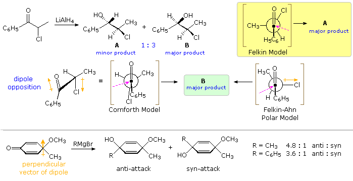
An interesting example in which steric effects and chelation are eliminated is shown at the bottom of the preceding diagram. Here a doubly vinylagous α-substituted ketone undergoes a diastereoselective addition of a Grignard reagent. This and related work by P. Wipf indicate that the selectivity is proportional to the perpendicular component of the molecular dipole, with nucleophile approach favored from the positive side. Curiously, hydride addition occurs without any diastereoselectivity.
1:3-Diastereoselectivity The previous discussion has focussed on examples of 1:2-diastereoselectivity, where the site of chiral influence has been adjacent to the carbonyl function. If this influence is moved to the β-carbon its strongest effect is transmitted via conformers having six-membered chelate rings. Three examples of such 1:3-diastereoselectivity are shown in the following diagram. For the addition of organometallic nucleophiles a strong coordinating metal like Ti(IV) is needed, both to stabilize the chelate ring and to activate the carbonyl group. As noted in equation 2, the magnesium of a Grignard reagent does not serve this purpose adequately. A possible transition state for the titanium chelated reaction is drawn in the left green shaded box (note the favored axial approach of the nucleophile). Alternatively, intramolecular control may provide selectivity, as shown in equation 3. Sodium triacetoxyborohydride is a weak hydride donor that is commonly used in weakly acidic solutions for reactions such as reductive amination; it does not reduce isolated ketones. Its use in the reduction of 2,6-dimethyl-5-hydroxy-3-heptanone produces excellent diastereoselectivity, as a consequence of the intramolecular hydride transfer intermediate drawn in the right green shaded box (the bulky R substituent prefers to occupy an equatorial-like position).
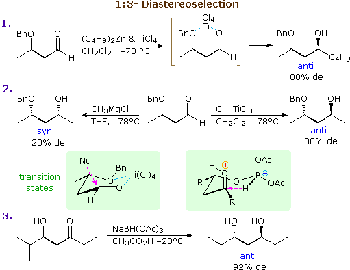
These same factors may also lead to 1:2-diastereoselectivity if α-substitution is present in the substrate. By clicking on the above diagram four examples will be displayed there. In the first two cases the α-carbon is the only stereogenic center, but selectivity occurs because of chelation to a β-functional group. Equations 6 & 7 are additional examples of steric control by intramolecular hydride transfer (see equation 3). Note that the large isopropyl groups control the facial selectivity, so the configuration of the smaller α-methyl substituent is relatively unimportant. The intramolecular hydride transfer mechanism noted above serves as a model for achieving enantioselective reduction. Several novel catalysts, in which borohydride is complexed with a difunctional chiral ligand, have been developed and used for the enantioselective reduction of prochiral ketones to chiral alcohols. In the following example a chiral ligand prepared from proline is converted to a boron heterocycle. This catalyst binds reversibly with diborane to form the reactive reducing species. Coordination of the ketone oxygen with the Lewis acidic boron orients, and activates the carbonyl group for hydride transfer to its si-face.
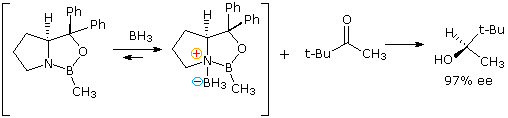
Allyl and Crotyl Addition to Aldehydes and Ketones Allyl Grignard reagents often exhibit different reactivity patterns than similar alkyl reagents, especially with hindered ketones. For example, allylmagnesium bromide adds to diisopropyl ketone as expected, but the major product from reaction with n-propylmagnesium bromide is 2,4-dimethyl-3-pentanol, the result of reduction by a MVP mechanism. Reagents such as methylmagnesium chloride, which have no β-hydrogens to transfer, may act as strong bases and enolize hindered ketones having α-hydrogens, even though the allyl reagent adds in good yield. This characteristic behavior has been attributed to the conjugated (or ambident) nature of this carbon nucleophile, a feature that is readily demonstrated in crotyl (2-butenyl) homologs. The chemistry of crotyl organometallic reagents has proven both interesting and useful. Conversion of either 1-bromo-2-butene (E or Z), or 3-bromo-1-butene, to a Grignard reagent gives identical mixtures of equilibrating stereo and regioisomers. From nmr evidence, the 1º-isomers drawn within brackets in the following diagram, are the main components (the minor 2º-regioisomers are not drawn). Rapid quenching of this Grignard reagent with water produces a nearly 50:50 mixture of 1- and 2-butene (cis/trans mixture), suggesting facile protonation at both the 1º and 2º allylic sites. Remarkably, simple ketones and aldehydes react exclusively at the 2º-site to form methallyl carbinols. A cyclic transition state for this rearranged addition will be displayed by clicking on the diagram. If the carbonyl group has different substituents, as shown, two new chiral centers are created (red asterisk), and a pair of racemic diastereomers will be formed. Accomplishing this C–C bond formation with high diastereoselectivity would provide chemists with a powerful tool for stereoselective synthesis of complex molecules. Such selectivity would also be different from most of the previous cases, in which diastereoselectivity results from the influence of a preexisting chiral center. It should be noted that crotyl Grignard additions to very hindered ketones are reversible. The rearranged methallyl carbinol is the kinetically favored product, but heat and extended reaction time leads to formation of the more stable crotyl carbinol, as illustrated by the lower equation in which the magnesium salt of a sterically congested methallyl carbinol is the starting point.
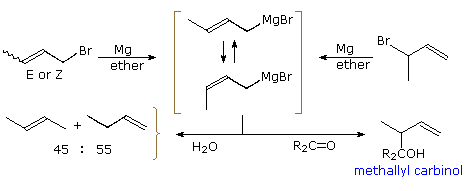
By clicking a second time on the above diagram, some examples of crotyl Grignard addition reactions will be displayed. The greatest product diastereoselectivity is found when one of the carbonyl substituents is much larger than the other. Because both E and Z-isomers of the crotyl reagent are present in the reaction, it is tempting to attribute the formation of the anti-diastereomer to one and the syn-diastereomer to the other. Two such transition states are drawn in the orange box, the E-reagent state leading to the anti-diastereomer and the Z-reagent state to the syn-isomer. At this stage it is not wise to draw such a conclusion, since there are other plausible structures leading to both isomeric products, and according to the Curtin-Hammett principle the favored reaction path among competing possibilities will be that having the lowest activation energy. One additional example will be shown by clicking on the diagram a third time. The steroidal 11-ketone in this example can only react with nucleophiles at its α or ri-face, as a consequence of hindrance by the β-oriented angular methyl groups. Furthermore, the most favored approach of a crotyl moiety appears to be that of the Z-isomer shown in the orange box. Indeed, a single product having the (11R, 20R)-configuration shown was obtained and identified by X-ray analysis. In this case the Z-crotyl reagent produces the anti-diastereomer.
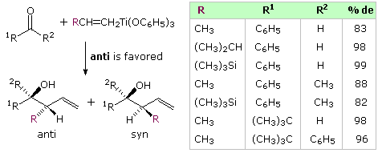 Because of its potential usefulness in synthesis, organic chemists have sought ways to achieve predictable control of diastereoselectivity in the addition of methallyl groups to carbonyl compounds via crotyl reagents. To this end a variety of other metals, ranging from zinc, chromium and titanium to boron, silicon and tin, have been investigated. The zinc, titanium and chromium reagents tend to undergo rapid E/Z interconversion, and either react with mixed diastereoselection or with a strong bias toward anti-selectivity. The examples shown on the right for crotyltitanium triphenoxide illustrate the latter behavior. Similarly, chromium (II) reagents generated in situ from (E or Z)-1-iodo-2-butene add to benzaldehyde with high selectivity favoring the anti-diastereomer. Some chair-like cyclic transition states that have been proposed for these reactions will be displayed on the right by clicking on the diagram. The E-based transition state A shown at the top is presumed to be favored, and leads to the anti-product isomer. An alternative Z-transition state, B would form the syn-isomer. The anti-isomer could also be formed by way of the Z-transition state D, drawn in the light gray box. As noted earlier, the assignment of ketone substituents as large, L and small, S, may sometimes be arguable.

Depending on what other ligands are present, crotyl boron, silicon and tin reagents have greater configurational stability than the metal reagents discussed above. Allyl boron and tin reagents may add spontaneously to aldehydes, but allyl silanes generally require catalysis by Lewis acids (this activates the carbonyl function) or by fluoride anions (this increases the nucleophilicity of the allyl moiety). Addition reactions of a crotylstannane reagent are shown in the following diagram and illustrate some important features. The E and Z isomers of the reagent are relatively stable at room temperature, but react sluggishly with most aldehydes. Chloral, being more electrophilic than most aldehydes, provides a convenient substrate for the uncatalyzed, room temperature addition of this reagent. The stereoselective reactions presented at the top of the diagram suggest a cyclic transition state mechanism in which the E-crotyl reagent gives the anti-diastereomer, and the Z-reagent forms the syn-diastereomer.
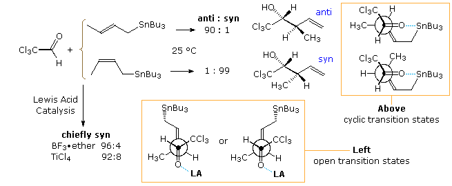
By an initial coordination of the carbonyl oxygen with a Lewis acid, the addition of crotylstannane is accelerated, but both E and Z-isomers form the syn-diastereomer as the major product. Open or acyclic transition states, such as the two drawn at the bottom of the diagram, appear to be functioning in this modification of the reaction. Note that the difference between these E and Z-transition states is very small, and the C–Sn bond is conjugated with the π-orbital of the double bond. Interestingly, if TiCl4 is mixed with the crotyl stannane before it is added to the aldehyde (reverse addition), the anti-isomer of the product is formed preferentially from both E and Z-reagents. A metal exchange reaction, in which the crotylstannane is converted to a crotyltitanium reagent most likely takes place. As noted above, the titanium reagents generally give anti-addition products. Lewis acid catalysis of crotyl silane addition reactions also proceeds by way of an open transition state, and favors the syn-product isomer.
Crotyl Boron Reagents Although it is possible to prepare E and Z-crotylboranes, CH3CH=CHCH2B(R)2, they interconvert at room temperature. Consequently, any study of addition stereoselectivity for the individual isomers must be conducted at -78 ºC. When this is done the E-isomer favors the anti-product diastereomer, and the Z-isomer favors the syn-product, both with >98% de. A more convenient approach is to use crotylboronate esters, CH3CH=CHCH2B(OR)2, or crotyltrifluoroborate salts, CH3CH=CHCH2BF3(-) K(+), as the addition reagent. The stereoisomers of these compounds are not only configurationally stable at room temperature, but the compounds themselves are tolerant of exposure to air and moisture, making their preparation storage and use relatively simple. An application using the pinacol ester of crotylboronic acid in shown in the following diagram. The presumed chair-like cyclic transition states for the addition are drawn on the top, with the product from each given underneath. Newman projection drawings are shown in the orange box at the bottom. The data in the table demonstrates the excellent diastereoselection achieved in this reaction.
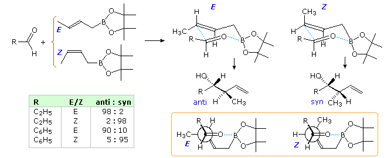
A similar set of equations and data for crotyltrifluoroborate reactions will be displayed above by clicking on the diagram. In this reaction addition is catalyzed by BF3-etherate, which functions as a fluoride ion transfer agent.
Enantioselectivity When achiral aldehydes and ketones are substrates for addition of allylic reagents, reaction takes place equally at both prochiral faces of the carbonyl double bond. For these addition reactions to be made enantioselective, the rate of reaction at one face of the double bond must be increased over that at the other face. This is the same requirement presented earlier for enantioselective hydroboration, and the isopinocampheyl chiral substituent used by Brown successfully in that case has proven effective here as well. Chiral boronate esters derived from tartrate esters have also served for enantioselective synthesis. Examples of both reagents are given in the following diagram. The specific chiral ligands indicated by the BL2* group are shown in the light green box at the upper right of the diagram. Since both α-pinene and tartaric acid enantiomers (antipodes) are available, the enantioselectivity of these reactions are easily controlled. The top equation shows enantioselective allyl addition to a prochiral aldehyde, creating a single new stereogenic center. The bottom equation shows the analogous crotyl addition in which two new stereogenic centers are formed.
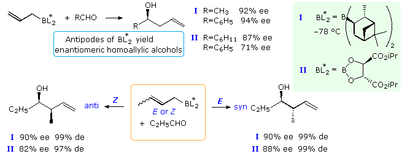
Crotylation of Chiral Aldehydes
The existence of a chiral center alpha to a carbonyl group presents a second, potentially conflicting, factor influencing the stereoselectivity of crotyl addition. The following diagram shows the addition of some achiral allyl boron reagents to three aldehyde substrates of this kind. The first example may be rationalized by the Felkin-Ahn model, the poor stereoselectivity reflecting the similar size of methyl and ethyl groups. The other two examples have polar substituents at the α-carbon, and must be analyzed differently. Because the allyl addition proceeds by a cyclic transition state incorporating a tetra-coordinate boron atom, the chelation model is not an option, and a non-chelation transition state accommodating the polarity of the substituent provides the best explanation. Only modest stereoselectivity takes place.
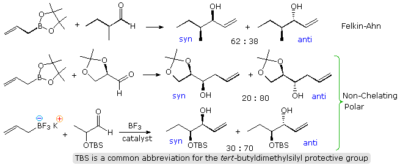
Analogous crotyl additions (both E and Z) have been reported for these aldehyde substrates. The reactions of 2-methylpropanal are shown in the diagram below. The slight preference for the syn-product noted above will be reflected in the 4,5-configuration of the products. The 3,4-configuration is generated by the chair-like cyclic transition states described above, with E-crotyl reagents forming anti diastereomers and Z-reagents giving syn-diastereomers. This selectivity is clearly maintained in all the products, whereas the Felkin-Ahn control of 4,5-configuration is marginal. Fortuitously, the favored transition state for the E-reagent has a Felkin-Ahn configuration, but the Z-transition state does not. By clicking on the diagram favorable representations of the cyclic transition states for these reactions will be displayed (R=C2H5). Newman projection views of the same transition states are drawn in the orange box.
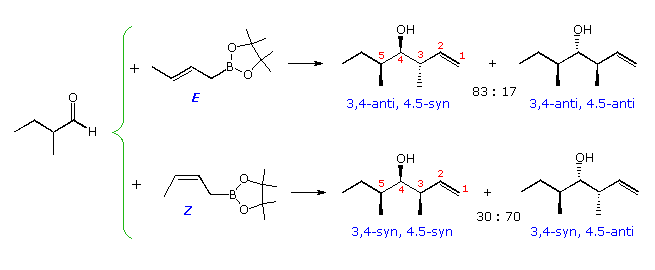
The results of crotyl addition reactions to the two aldehydes having polar α-substituents will be displayed above by clicking a second and third time on the diagram. The dominant stereoselectivity results again from the tendency of E-crotyl reagents to form anti diastereomers and Z-reagents syn-diastereomers. In both cases this is reflected by the 3,4-configuration (note the numbering change for the glyceraldehyde acetal in example 2). The influence of the α-polar substituent is once again less significant, and in these cases reinforcement takes place for the Z-reagent relative to its E-isomer.
Addition reactions of enolate species to aldehydes and ketones, known as the aldol reaction, are structurally analogous to the allyl and crotyl addition reaction described above. This similarity, which is shown in the following diagram, extends to the creation of two new stereogenic centers, red asterisks, from appropriately substituted allyl and enolate reactants (R1 ≠ H). By varying the metal M from Li and Na through Mg, Zn and Ti to B and Si, its influence on the diastereoselectivity of these reactions has proven to be integral, with boron providing some of the best selectivity. It is appropriate and instructive, therefore, to examine how far the previous analyses and interpretations may be extended and applied to the aldol reaction.
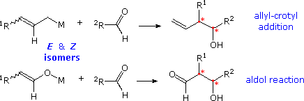
Our ability to control the donor-acceptor roles of carbonyl reactants, the regioselectivity and stereoselectivity of enolization, and the diastereoselectivity of the aldol product are discussed elsewhere in this text. Techniques for generating the E and Z isomers of designated enolate species have been developed, and the diastereoselectivity of each in the aldol reaction established. As a general rule for reactions involving cyclic transition states, E-enolates produce anti-aldols, and Z-enolates the syn-diastereomer, a tendency that reflects the facial selectivities of the transition states. Thus the reaction of E-enolates with aldehydes proceeds preferentially by the re (or si) face of the carbonyl reactant bonding to the same prochiral face of the enolate. Conversely, similar reactions of Z-enolates occur by preferential bonding of the re (or si) face of the aldehyde to the si (or re) face of the enolate. Enolborinates were among the most reliable and selective reagents revealed by a host of aldol studies, a quality reflected in reactions of the crotylboronates. The Mukaiyama aldol reaction of silyl enol ethers takes place by way of an open transition state, in which both enolate configurations are biased to bond to the opposite prochiral face of the aldehyde, giving syn-diastereomers as the major product. In light of previous discussions, it may be anticipated that the course of aldol reactions will be further influenced by the presence of a nearby chiral center in the carbonyl acceptor or the enolate donor. The following sections provide examples of such stereoselectivity.
1:2-Diastereoselection in Reactions with Chiral Aldehydes
Two aldol reactions of α-substituted phenylacetaldehydes are presented in the following diagram. The first is a typical alkali metal enolate addition; the second, in which a silyl enol ether undergoes Lewis acid catalyzed addition, is called the Mukaiyama aldol. The attacking enolate anion is achiral, so the diastereoselectivity of the reaction is a measure of the facial selectivity (re vs. si) imparted to the aldehyde carbonyl by the α-substituent. Because the α-substituent is an alkyl group in these reactions, the syn-anti nomenclature for the product diastereomers is ambiguous, depending on which group (phenyl or alkyl) is considered a substituent. For comparison purposes in this drawing, the alkyl group is designated the substituent. Unexpectedly, as the alkyl substituent increases in size (equation 1), the moderate syn stereoselectivity is diminished and changes to a weak preference for the anti-isomer when R = tert-butyl. Four Felkin-Ahn models may be considered when analyzing these results. A and D predict syn-selectivity, while B and C lead to the anti-diastereomer. When R = methyl or ethyl, A is the favored transition state, but for the larger substituents, iso-propyl and tert-butyl, C becomes increasingly important, tipping the diastereoselectivity toward the anti-product. Transition states B and D exhibit hindrance to nucleophile approach and are unlikely participants. A Zimmerman-Traxler cyclic transition state structure, analogous to A when R = CH3, is drawn in the orange shaded box. As R increases in size, its axial-like orientation suffers increased hindrance, favoring an alternative state in which the R & Ph groups exchange locations (i.e. C). The increased diastereoselectivity of the Mukaiyama aldol reaction is noteworthy (de is 92 versus 56 for the analogous case in equation 1), and reflects the open transition state adopted by this reaction. To visualize this state, rotate the aldehyde component 180º from its orientation in the cyclic structure, maintaining the developing carbon-carbon bond. This leaves the two oxygen functions far apart. Coordination of the aldehyde carbonyl with BF3 increases the electrophilicity of its carbon, and may serve to stabilize an orthogonal orientation of the adjacent phenyl group, as in A (and B). Such a configuration is known to be important for anchimeric assistance by an adjacent phenyl group in carbocation formation and rearrangement.
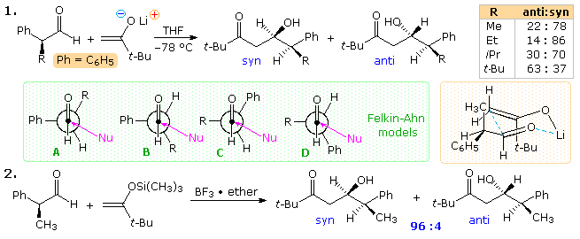
Aldol reactions of some chiral aldehydes having an α-heteroatom substituent will be displayed above by clicking on the diagram. Although these additions tend to favor the anti-diastereomer, steric factors often determine the degree of diastereoselectivity. The same ketone enolate used in the previous study is the nucleophile in reaction 3. When the R group is larger than methyl, good 1,2-diastereoselectivity for the anti-isomer is observed. The Felkin-Ahn polar model serves to predict this outcome, as does a modification of the Cornforth model proposed by D.A. Evans, (Harvard). Reaction 4 makes use of a malonate nucleophile and, because of its greater stability and reduced reactivity, Lewis acid activation of the aldehyde is required. Since both BF3 and ZnCl2 produce strong anti-diastereoselectivity, the transition state does not seem to be chelated. An increase in the size of the oxygen substituent P causes a decrease in diastereoselectivity, a trend that is best explained by the Evans model. In this respect, the very large trityl group induces a dramatic change in diastereoselectivity, which might be explained by the modified Evans model drawn at the lower right.
Two additional examples in which a Z-enolate is used as the nucleophile are drawn in the following diagram. Reaction 5 should be compared with reaction 1 of the earlier display. The very high 4,5-syn diastereoselectivity is typical of Z-enolates reacting via a cyclic transition state, as drawn in the orange shaded box. The 5,6-syn selectivity is slightly better than that for R = CH3 in equation 1, and conforms to the Felkin-Ahn model. Reaction 6 introduces the influence of an achiral β-siloxy function, capable of chelating with the carbonyl oxygen. The 4,5-diastereoselectivity remains exclusively syn, but the 5,6-selectivity is changed to anti (60% de) as a consequence of chelation (magenta shaded box).
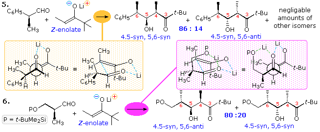
1:3-Diastereoselection in Reactions with Chiral Aldehydes
Two examples of 1:3-diastereoselection in reactions of β-substituted aldehydes are shown in the following diagram. Several limitations should be noted at the outset. First, these are all Mukaiyama aldol reactions of silyl enol ethers. Since BF3 does not allow chelation, these reactions proceed by an open transition state. Similar reactions of enolborinate reactants, which involve a cyclic transition state, take place with very poor diastereoselectivity. Second, a β-alkyl substituent seems to have little influence, in contrast to the case of Y=CH3 in example 2 above. All of the polar substituents except acetoxy display moderate to good diastereoselectivity in favor of the 1,3-anti diastereomer. A model for these reactions, in which steric and electrostatic repulsions are minimized, has been suggested by Evans. In this model the dipole of the polar Y substituent is oriented roughly anti to the carbonyl group, as shown at the lower left.
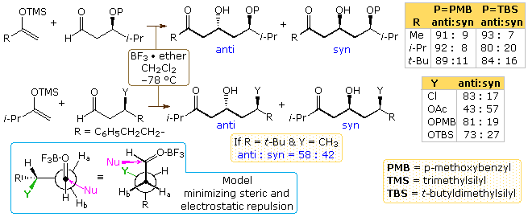
The addition of an α-alkyl substituent to the aldehyde reactants used in the above study creates a competition between the syn-selectivity associated with the Felkin-Ahn model and the anti-selectivity noted here for polar β-substituents. Normally we would expect the stereo center nearest the acceptor carbonyl function to exert a controlling influence; however, evidence to the contrary will be displayed above by clicking on the diagram. The anti-reactant isomer shown in the top equation adds with high diastereoselectivity favoring product isomer A. This diastereomer may be designated 1,2-syn,1,3-anti with reference to the newly formed chiral center (red asterisk). A transition state for this addition, drawn at the lower left (gray shaded box), exhibits complementary features of both the Felkin-Ahn and electrostatic models. As a result of this stereoreinforcing influence, high diastereoselectivity is expected. With the exception of enolates carrying the large tert-butyl group, the syn-reactant isomer adds with relatively poor diastereoselectivity. The R = tert-butyl enolate forms the 1,2-syn,1,3-anti-diastereomer C with high selectivity, but the R = methyl enolate is much less selective and actually favors the 1,2-anti,1,3-anti-diastereomer D when P = PMB. Transition states leading to diastereomers C and D are drawn at the bottom of the diagram. In these cases the influence of the α and β- substituents conflict and are nonreinforcing. Felkin-Ahn dominance favors isomer C, whereas electrostatic factors favor formation of D. If the solvent is changed from methylene chloride to the less polar toluene, the diastereoselectivity shifts in favor of D in every case.
It is interesting to see what happens to the selectivity described here when E and Z-enolate donors replace the methyl ketone enolates used above. Examples of these four reactant combinations are shown in the following illustration. In all but the last Z-enolate reaction Felkin-Ahn facial selectivity dominates, with β:γ being syn in products A through D. Also the known preference of the Mukaiyama aldol for α:β syn products is realized with a de varying from 40% to 90%. It should be noted that the anti-configuration of substituents in aldehyde I mutually reinforce Felkin-Ahn control, especially with the E-enolate. As noted above. the syn-substituents in II are nonreinforcing, leading to a lower diastereoselectivity in the aldol products.
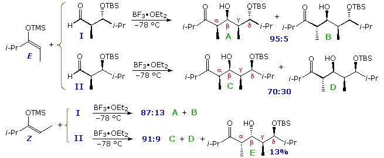
Corresponding reactions of aldehydes I and II (above) with comparable E-enolborinates and Z-chlorotitanium enolates are shown below. The cyclic transition states of these reactions impose constraints that are evident in the product isomer distributions. As expected, the E-borinates give α:β-anti diastereomers exclusively, and the Z-titanium enolates strongly favor the α:β-syn family of isomers. Felkin-Ahn control is only strong in the reaction of the mutually reinforced anti-substituted aldehyde I with the E-borinate. Other combinations show diminished β:γ-syn selectivity, and in the case of the Z-titanium enolates anti-Felkin-Ahn selectivity narrowly predominates. The facial bias imposed on the aldehyde carbonyl group by a β-polar substituent may be seen in the proportions of diastereomers having 1,3-anti (β:δ-anti) configurations (e.g. A, B, E & G).
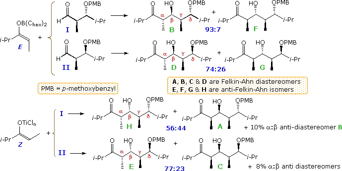
Diastereoselection in Reactions with Chiral Enolates
The enolate donor in an aldol reaction may also have a center of chirality, leading to the formation of additional diastereomeric products. The two equations in the following diagram show examples in which 1,4-diastereoselection (red asterisks) might result from such an aldol reaction involving enolate derivatives of a methyl ketone. Note that the enolate in equation 1 is racemic, whereas that in equation 2 is the S-enantiomer. The evidence indicates mediocre selectivity, probably resulting from steric differences between large and small substituents (RL and RS) at the chiral center. Because of a tighter cyclic transition state, the diastereoselectivity of boron enolates is greater than that of their lithium counterparts.
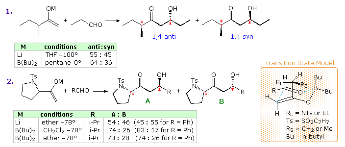
Two additional examples will be displayed above by clicking on the diagram. These Z-enolates are expected to favor 1,2-syn diastereoselectivity of the newly created α & β chiral centers, as noted earlier. The lithium enolate in example 3 exhibits moderate 1,2-syn selectivity, which is much improved when the corresponding enolborinate is used. Interestingly, the 1,4-diastereoselectivity noted in example 2 (previous diagram) is enhanced for both enolate reactions, reflecting a preference for bonding from the si-face of the enolate species to the re-face of the carbonyl group as shown. Example 4 demonstrates the exceptional 1,2- and 1,4-diastereoselectivity that can be achieved with both enolborinates and chlorotitanium enolates. Note that the selectivity given in the table is for the syn-syn diastereomer versus the other three isomers combined.
Three examples of reactions involving E-enolates are shown below. Excellent facial selectivity is found in reactions of these nucleophiles Here the 1,2-diastereoselectivity of the newly created α & β chiral centers is strongly anti, as expected. However, the 1,4-diastereoselectivity (α':β) is not consistent. The 1,4-anti-selectivity shown in reactions 6 and 7 is predicted by the transition state model, but the 1,4-syn-selectivity and 1,3-anti selectivity (α':α) in reaction 5 is anomalous. By clicking on the diagram, corresponding reactions of equivalent chlorotitanium Z-enolates will be shown. Again, strong facial selectivity is displayed for bonding at the re-face of the enolate as drawn, with both the new 1,2- (α:β) and 1,4- (α':β) diastereoselectivities being syn, as expected.
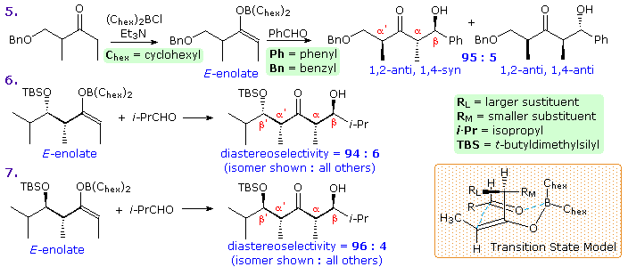
Analogous Mukaiyama aldol reactions are shown in the following diagram. The E- and Z-enolate reactants are both derived from the same syn-disubstituted ethyl ketone. Both enolates react with excellent but complementary facial selectivity. From past observations, the 1,2-diastereoselectivity of the newly created α & β chiral centers is expected to exhibit moderate syn-diastereoselectivity. This is pronounced for the E- enolate, but very poor in the Z-isomer reaction. The exceptional and unusual 1,3-anti selectivity (α':α) shown by the Z-enolate is noteworthy.
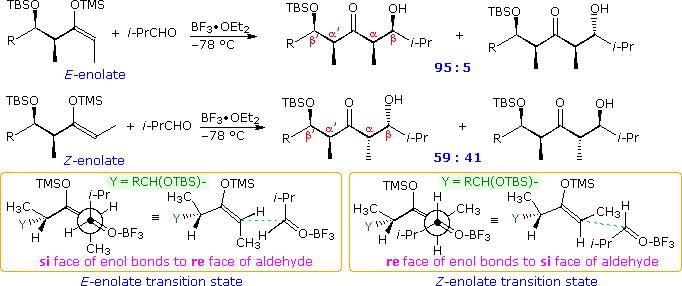
A final example of the remarkable directive influence that neighboring chiral centers may exert on carbon-carbon bond forming reactions is found in the 1,5-diastereoselectivity induced by β-substituents present in methyl ketone donors. Examples are given in the following diagram, the 1,5-relationship being designated by the red asterisk in the top equation.
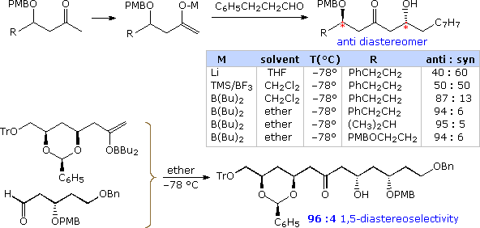
Supporting and Conflicting Substituent Effects
Many factors influence the diastereoselectivity of aldol reactions. These include the nature of the reaction (cyclic or open transition state), the configuration of the enolate donor (E or Z), the presence of stereogenic centers α to the carbonyl acceptor and/or the enolate donor, as well as a β-polar substituent on the aldehyde. The following general equation shows all these features present in one reaction (the colored asterisks designate chiral centers). Clearly, there are many possible perturbations of these factors, and establishing which combinations lead to useful stereoselectivity is a challenge.
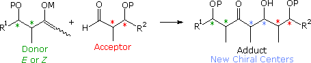
Since both reactants are chiral, it is desirable to design experiments that use enantiomerically pure reactants, so as to simplify the interpretation of results. Much of the work in this field has been carried out by the research group of Prof. D. A. Evans (Harvard), the following examples coming from their reports. The first examples. shown below, involve the E-borinate enolate from a syn-α-methyl, β-trimethylsiloxy-ethyl ketone reacting with syn and anti-α-methyl, β-alkoxyhexanals. The ketone enolate is a single enantiomer; the aldehyde reactants in reactions A and D are enantiomers, as are the aldehydes in reactions B and C. The chiral centers from the aldehyde component are labeled α & β, the newly formed chiral centers are designated by light blue asterisks, and the common centers from the enolate are labeled α' & β' (top equation). By clicking on the diagram, corresponding reactions of the Z-titanium chloride enolate will be displayed. Again, the aldehyde reactants in reactions A and D are enantiomers, as are the aldehydes in reactions B and C; however, they have changed their location.
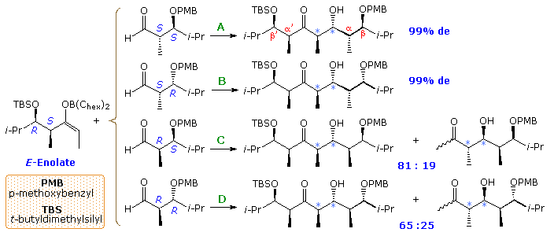
All the reactions of the E-enolate give anti-aldol products (light blue asterisks). In reaction A the α and β-stereogenic centers of the aldehyde and the α'-center of the enolate have matching influences on product diastereoselectivity. Thus Felkin-Ahn selectivity in which the re-face of the enolate bonds to the si-face of the carbonyl predominates. In reaction B the β-polar substituent of the aldehyde is mismatched in this respect, but has little effect on the overall diastereoselectivity. In reaction C the α-substituent of the aldehyde is mismatched, leading to dominance of the anti-Felkin-Ahn product. Finally, reaction D shows the results of a fully mismatched combination, which even produces a small amount of syn-aldol product (not shown). Most of the Z-enolate reactions shown by clicking on the diagram give syn-aldol products, as expected (light blue asterisks). Reaction A illustrates the fully matched influence of all the reactant stereogenic centers. Reactions B and C are the partially mismatched cases, and D shows a mixture of products from the fully mismatched combination. Reactions A and B display the anti-Felkin-Ahn preference associated with syn-aldol reactions. The remarkable influence of a β-polar substituent on the aldehyde is again shown in reaction C, where a strong shift to Felkin-Ahn addition occurs, despite the mismatched β-methyl substituent.
A similar study of the Mukaiyama aldol reaction is outlined in the following diagram. Since this reaction tends to give syn-aldol products, those combinations of reactants having an additional bias toward syn-selectivity have been selected. As shown, these four combinations do indeed exhibit a high degree of syn-diastereoselectivity (light blue asterisks), and also follow Felkin-Ahn selectivity. Although the Z-enolate reactions are less selective, they produce a high degree of 1,3-anti-dimethyl isomers in contrast to the corresponding syn-configurations obtained in other reactions.
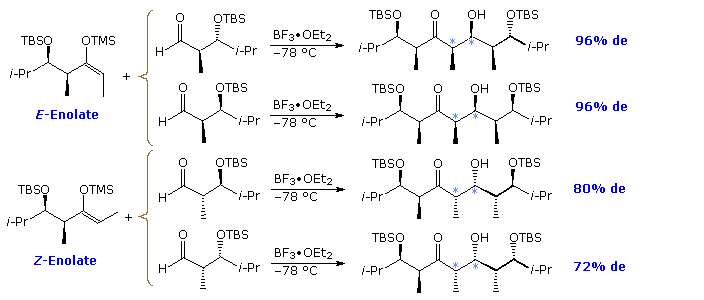
The remaining four reactant combinations, not shown, give mixtures of diastereomers that include significant amounts of anti-aldol products.
Enantioselective Aldol Reactions
Chiral Borinate Enols Aldol reactions of prochiral donor and acceptor reactants produce racemic mixtures of chiral adducts. For such reactions to be made enantioselective, it is necessary to introduce a chiral feature that will induce a difference in reaction rates at the prochiral faces of the acceptor carbonyl function. This is the same requirement presented earlier for enantioselective crotylation reactions, and chiral borinate moieties, such as those shown in the following diagram, have been used for this purpose. One example of this application is drawn beneath the formulas I through IV, and four more will be displayed by clicking on the diagram. Note that the last example shows the addition of an acetate unit, so enantioselectivity is not accompanied by diastereoselectivity.
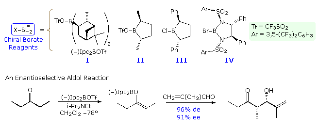
A model of the transition state for the isopinocampheyl case may be examined by .
Chiral Auxiliaries Another approach to enantioselective aldol synthesis requires attachment of an enantiomerically pure chiral substituent to one of the reactants in the reaction. If this substituent exerts a controlling influence, and if the diastereoselectivity of the reaction is excellent, the product should be obtained as a single enantiomer. The chiral substituent may then be removed, yielding the final enantiomerically pure aldol adduct. A substituent serving this purpose is commonly called a chiral auxiliary. Chiral auxiliaries have been prepared from different kinds of natural products, including amino acids, alkaloids and terpenes. In this section of the text we shall make use of a family of oxazolidinone auxiliaries prepared by the Evans group (Harvard). Three examples of these auxiliaries are shown in the following diagram. Many other types have been prepared and used in a variety of reactions. The oxazolidinone auxiliary is usually incorporated as an imide derivative, shown for propionic acid in the equation at the bottom of the illustration. A Z-enolborinate is prepared in the usual way, and this reacts with a number of achiral aldehydes with very high enantioselectivity. In this example the re-face of the enolate bonds to the si-face of the aldehyde. Although the enolborinate by itself might be expected to exist in a chelated form, with two B–O bonds, the aldol reaction requires a reorganization of this chelation in order to activate the aldehyde carbonyl group for nucleophilic addition. As shown by the formula in brackets, the free oxazolidinone ring has rotated 180º from its chelated position in order to minimize dipole repulsion. Steric hindrance by the pendent isopropyl group directs the reaction to the 2S,3R product.
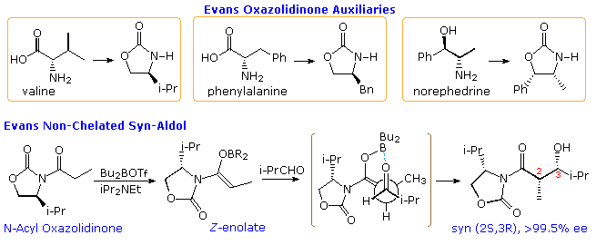
By clicking on the diagram, two additional examples of the "Evans aldol" will be displayed. Note that the configurational difference between the valine and norephedrine derived auxiliaries leads to different facial selectivity in the reaction, thus yielding the other syn-enantiomer in pure form. The chiral auxiliary group may be removed to give either the carboxylic acid or its methyl ester by base catalyzed cleavage. Racemization of the α-carbon is possible, but seems to be negligible. Other procedures for removing the auxiliary have also been developed, with lithium hydroperoxide being particularly selective thanks to the alpha effect. In all these cases no anti-diastereomers are formed. If the auxiliary remains chelated to the enolate during the aldol reaction the stereochemical outcome is changed. By clicking on the diagram a second time , two examples of this phenomenon will be shown above. In the upper equation a chelated Z-titanium enolate is initially formed and then reacted with an aldehyde. In contrast to boron, the ligand shell of titanium is readily increases, permitting the activated complex (in brackets) to maintain the chiral auxiliary in a chelated orientation. The steric influence of the auxiliary is therefore opposite to that exerted in the unchelated borinate reaction, and the major product is the 2R,3S-syn-enantiomer, S1. Small amounts of the syn-enantiomer, S2, and anti-diastereomer A1 are also formed. The lower equation describes a different procedure which leads to the same major product. Here, a complexed Z-enolborinate is prepared and then allowed to react with 2 equivalents of aldehyde activated by complexation with a Lewis acid such as TiCl4 or SnCl4. An open transition state, similar to that of the Mukaiyama aldol reaction, has been proposed by C. H. Heathcock (Berkeley) and is drawn in brackets. The only minor isomer obtained was A1. Interestingly, when the large Lewis acid (C2H5)2AlCl was used to activate the aldehyde, the anti-enantiomer A1 was formed in 90% de, accompanied by S2. Steric hindrance of the Lewis acid with the Z-methyl group changes the facial selectivity of the aldehyde from re to si. As a rule, Evans' chiral auxiliaries exert a controlling influence in reactions with chiral α-substituted aldehydes, overriding even Felkin-Ahn preferences.
Selective Enolization of an α-Substituted Chiral Donor Statistically, the reaction of a prochiral enolate with a prochiral aldehyde is likely to produce a mixture of four diastereomeric aldols as their racemates. In seeking to direct such reactions to a single stereoisomer the following features must be controlled. • The enolate configuration E or Z. • The facial selectivity of the enolate donor. • The facial selectivity of the aldehyde acceptor. If an α-substituent renders the enolate moiety chiral, and it is used as a single enantiomer, diastereomeric control of the factors listed above would lead to the formation of a single stereoisomer. This outcome has been realized in a remarkable study by C.H. Heathcock (Berkeley), in which all four possible aldol diastereomers were selectively prepared from the reaction of (S)-4-trimethylsiloxy-5,5-dimethyl-3-hexanone with an assortment of aldehydes, as summarized in the following diagram. The starting ketone is drawn in the center orange shaded box, and the preparation of each syn and anti-enantiomer was accomplished by selective enolate formation, as designated by the green arrows.
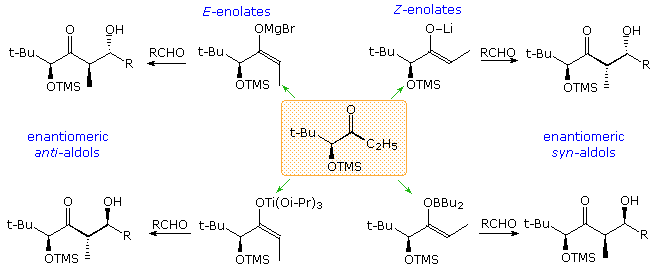
By clicking on the diagram, the two procedures leading to the syn-enantiomers will be displayed. The change in selectivity relative to the siloxy substituent is due to its chelation effect in the lithium enolate and non-chelated polar effect in the boron enolate. As a result, the bulky t-butyl group serves to direct bonding from the re-face of the enolate to the si-face of the carbonyl group in the lithium enolate, but changes the facial selectivity of both reactants in the enol borinate. Clicking on the diagram a second time changes the display to procedures leading to the anti-enantiomers. Pure E-enolates are more difficult to generate, and the discovery that the magnesium salt from reaction of 2,2,6,6-tetramethylpiperidine with ethylmagnesium bromide enolized the starting ketone selectively in this manner was crucial. In the new display this enolization is described on the far left by way of the bracketed transition structure. The α-siloxy substituent again chelates with the magnesium favoring a transition state in which the si-face of the enolate bonds to the si-face of the carbonyl group (top equation). In order to reverse this selectivity, a bulkier silyl substituent is introduced and the magnesium is exchanged with a triisopropoxidetitanium moiety. This exchange required a specific combination of solvents and ultra-sound activation. Once again, chelation is prevented, and dipole opposition causes a reversal in facial selectivities, leading to the enantiomeric anti-aldol product. Alternative routes to E-enolate intermediates are possible. Procedures for the preparation of E-enolborinates have been described, but in this case the α-siloxy substituent appears to interfere with this approach. Clearly, diastereoselective and enantioselective aldol synthesis requires careful evaluation of the many factors that may influence a specific application.
This page is the property of The Edvibe Team. Comments, questions and errors should be sent to contact@edvibe.co.ke. These pages are provided to the IOCD to assist in capacity building in chemical education. 05/05/2013